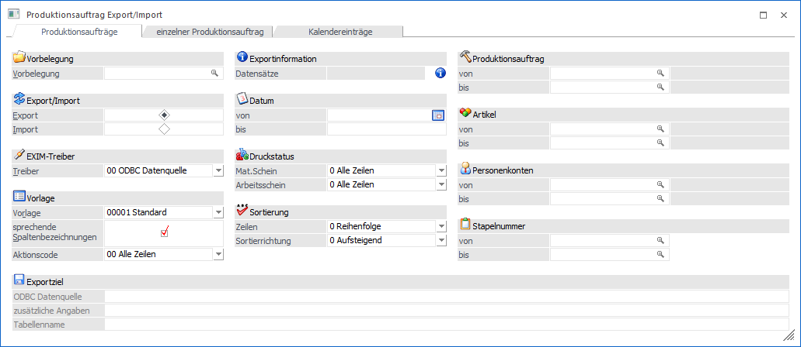
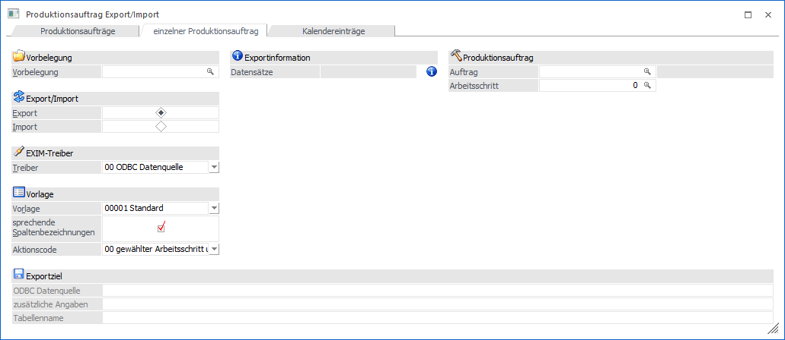
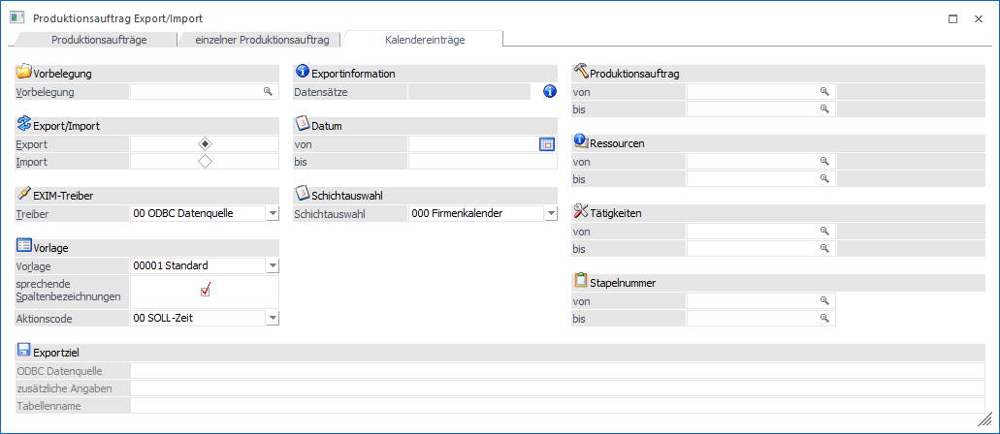
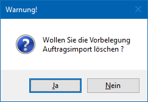

Im Programmpunkt
1 WinLine PPS
1 Produktion
1 Produktion Export / Import
können Bewegungsdaten der WinLine PPS ex-und importiert werden. Hierzu zählen u.a. Materialentnahmen, Ressourcenzeiten oder ganze Produktionsaufträge. Das Fenster selbst ist hierbei in unterschiedliche Register unterteilt.
Hinweis
Zum Öffnen des Fensters muss zumindest eine EXIM-Vorlage vom Typ "Produktionsauftrag" in der WinLine vorhanden sein! Des Weiteren ist das Register "Kalendereintrag" nur auswählbar, wenn auch eine Vorlage des Typs "PPS Zeiten" vorhanden ist.
Produktionsaufträge

In diesem Register können Daten für mehrere Produktionsaufträge gleichzeitig exportiert bzw. importiert werden.
Einzelner Produktionsauftrag

In diesem Register können Daten für einen selektierten Produktionsauftrag exportiert werden. Importiert können hingegen Daten für einen oder mehrere Produktionsaufträge.
Kalendereinträge

In diesem Register können IST-Zeiten importiert werden bzw. SOLL- und IST-Zeiten exportiert werden.
In den darauffolgenden Kapiteln werden Export- bzw. Importmethoden für Produktionsauftragsdaten bzw. Kalendereinträge beschrieben.
Buttons
Ø Ok
Durch Anwahl des Buttons "Ok" bzw. der Taste F5 wird der Export bzw. Import durchgeführt.
Hinweis zum Import
Wurde die Option "Zeilen vor dem Import editieren" aktiviert, so wird zunächst automatisch in einen Prüfbereich gewechselt, in welchem die Importzeilen in Form einer Tabelle dargestellt werden.
Ø Import (nur bei Import)
Mit Hilfe des Buttons "Import" im Prüfbereich (siehe Option "Zeilen vor dem Import editieren" bzw. Button "Ok") wird der Import durchgeführt.
Ø Ende
Durch Drücken des Buttons "Ende" bzw. der Taste ESC wird das Fenster geschlossen und alle Einstellungen verworfen.
Ø Eingaben initialisieren
Durch Anklicken dieses Buttons werden alle getätigten Einstellungen verworfen wodurch eine neue Selektion durchgeführt werden kann.
Hinweis
Wird mit einer Vorbelegung gearbeitet, dann kann diese direkt gelöscht werden.

Ø Exportvorschau (nur bei Export)
Durch Drücken des Buttons "Exportvorschau" werden in einem neuen Fenster die Datensätze, die auf Grund der vorgenommenen Einstellungen exportiert werden würden, angezeigt.
Ø Zurück
Durch Anwahl des Buttons "Zurück" kann aus der Export- bzw. Importvorschau in das Hauptfenster zurückgewechselt werden.